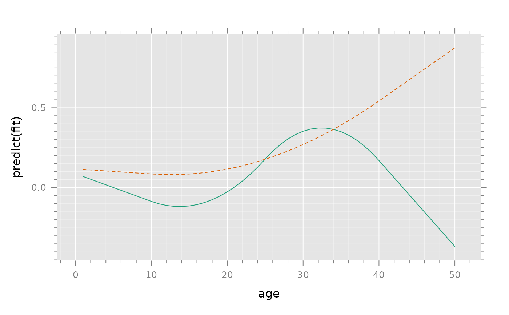
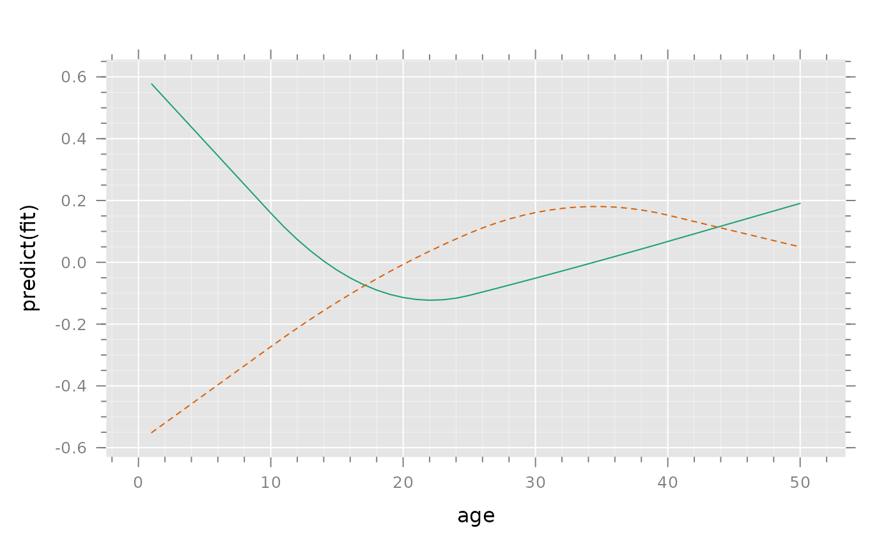
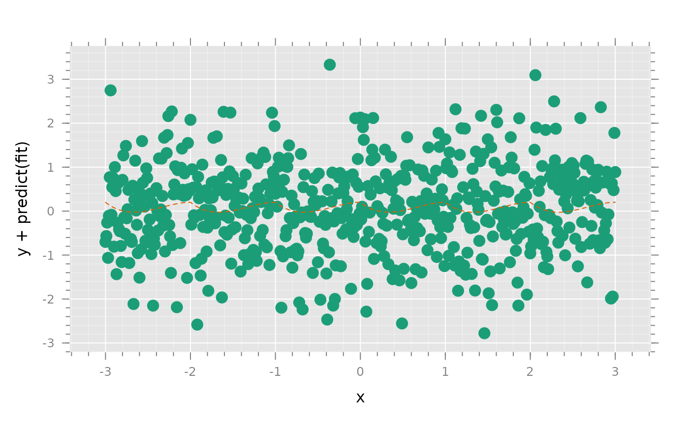
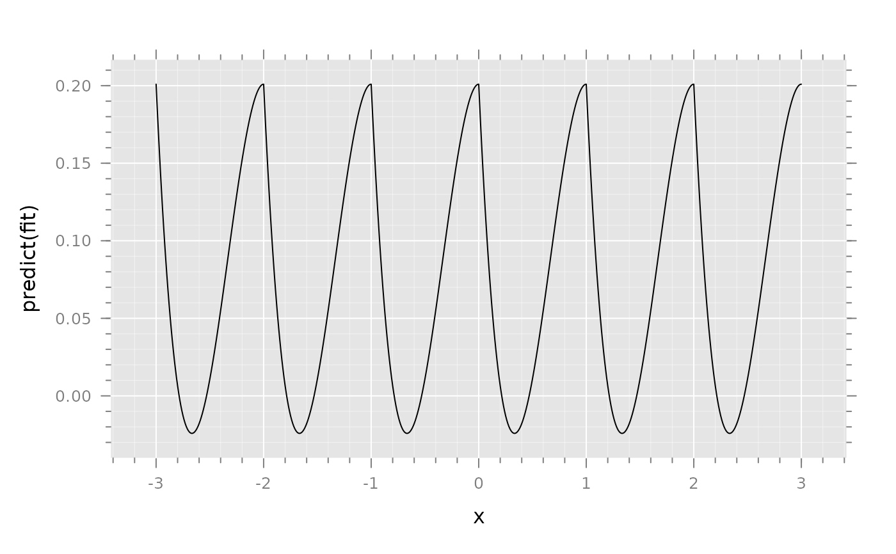
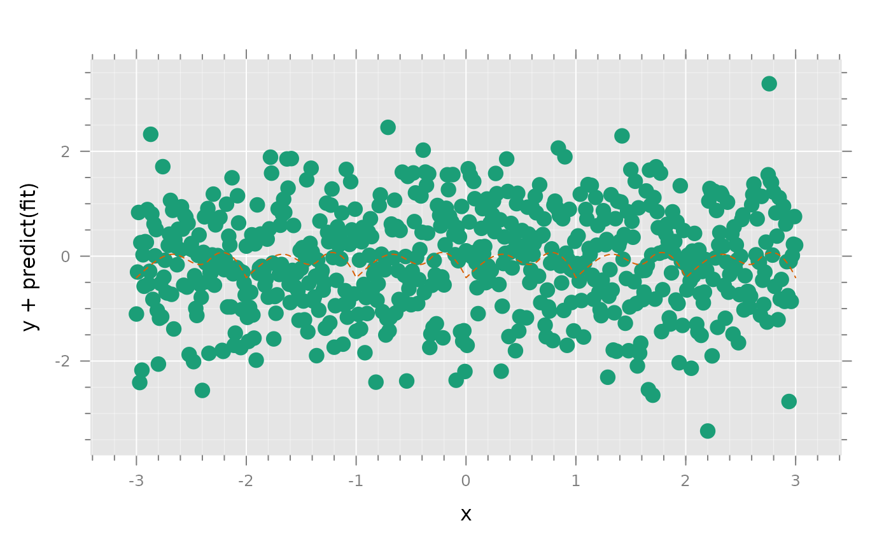
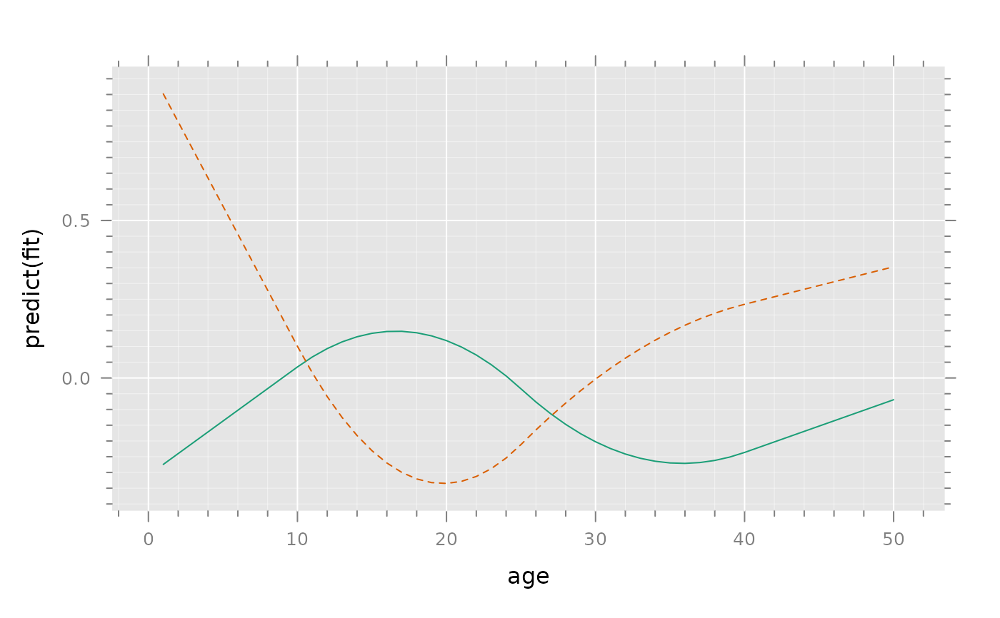
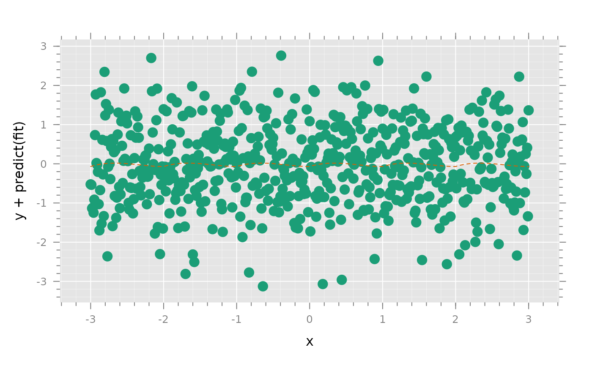
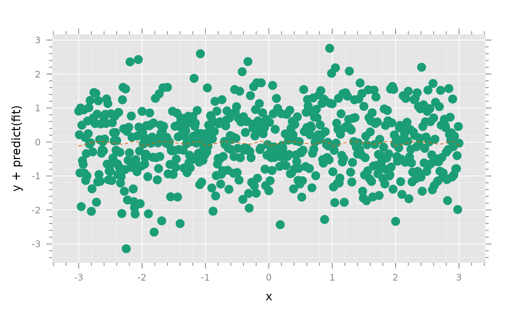
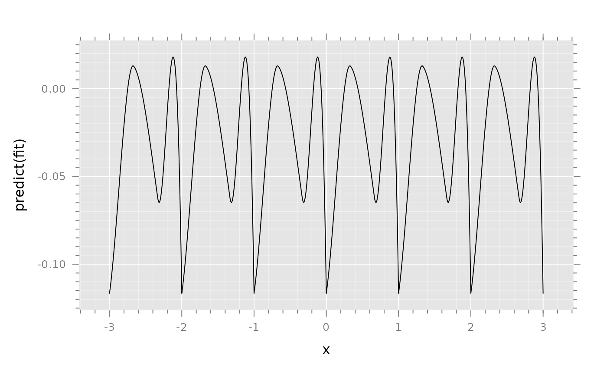
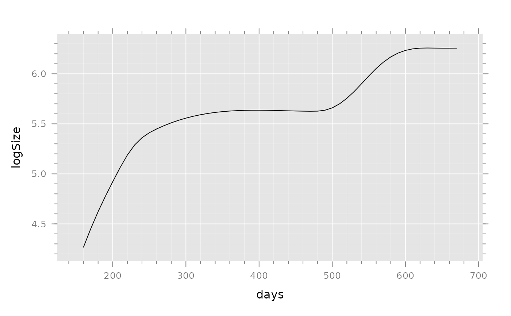

These functions implement a general polynomial spline with possibly different degrees
in each interval and different orders of smoothness at each knot,
including the possibility of allowing a discontinuity at a knot. The
function sc helps in the construction of linear hypothesis matrices
to estimate and test levels and derivatives of splines at arbitrary points
and the saltus of derivatives that have discontinuities at knots.
Arguments
- x
value(s) where spline is evaluated
- knots
vector of knots
- degree
vector giving the degree of the spline in each interval. Note the number of intervals is equal to the number of knots + 1. A value of 0 corresponds to a constant in the interval. If the spline should evaluate to 0 in the interval, use the
interceptargument to specify some value in the interval at which the spline must evaluate to 0.- smoothness
vector with the degree of smoothness at each knot (0 = continuity, 1 = smoothness with continuous first derivative, 2 = continuous second derivative, etc. The value -1 allows a discontinuity at the knot. A scalar is recycled so its length equals the number of knots. Alternatively, a list of length equal to the number of knots. Each element of the list is a vector of the orders of derivatives which are required to be smooth. THis allows non-sequential constraints, e.g. to have the same first and second derivative on either side of a knot but a possible discontinuity and change in higher-order derivatives, the vector would be c(1,2). Note that if a list is used, all elements must provide all desired constraints. That is the list argument corresponding to
smoothness = c(1,2,-1)issmoothness=list(0:1, 0:2, -1). The default is 1 less than the minimum of adjoining degrees at- lin
provides a matrix specifying additional linear contraints on the 'full' parametrization consisting of blocks of polynomials of degree equal to max(degree) in each of the length(knots)+1 intervals of the spline. See below for examples of a spline that is 0 outside of its boundary knots.
- periodic
if TRUE generates a period spline on the base interval 0,max(knots). A constraint is generated so that the coefficients generate the same values to the right of max(knots) as they do to the right of 0. Note that all knots should be strictly positive.
- intercept
value(s) of x at which the spline has value 0, i.e. the value(s) of x for which yhat is estimated by the intercept term in the model. The default is 0. If NULL, the spline is not constrained to evaluate to 0 for any x.
- signif
number of significant digits used to label coefficients
- exclude
number of leading columns to drop from spline matrix: 0: excludes the intercept column, 1: excludes the linear term as well. Terms that are excluded from the spline matrix can be modeled explicitly.
- a
a 'periodic' knot at which a spline repeats itself
- n
the maximal 'order', i.e. maximal degree + 1, of a periodic spline
Value
gsp returns a matrix generating a spline. cs,
qs and lsp return matrices generating cubic, quadratic and
linear splines respectively.
smsp, whose code is adapted from function in the package
lmeSplines, generates a smoothing spline to be used in the random
effects portion of a call to lme.
Details
Many polynomial regression splines can be generated by 'plus' functions although the resulting basis for the spline may be ill conditioned. For example, a 'quadratic spline' (a spline that is quadratic in each interval with and smooth with a first derivative at each knot) with knots at 1 and 3 can be fitted with:
plus <- function(x,y) ifelse(x>0,y,0) lm(y ~ x + I(x^2) + plus(x-1,(x-1)^2) + plus(x-3,(x-3)^2))
All 'standard' polynomial splines with the same degree in each interval and continuity of order one less than the degree at each knot can be constructed in this fashion. A convenient aspect of this parametrization of the spline is that the estimated coefficients have a simple interpretation. The coefficients for 'plus' terms represent the 'saltus' (jump) in the value of a coefficient at the knot. Testing whether the true value of the saltus in a coefficient is 0 is equivalent to a test for the need to retain the corresponding knot.
This approach does not work for some more complex splines with different degrees or different orders of continuity at the knots. An example is the commonly used natural quadratic spline. A natural quadratic spline with knots at -1,0 and 1 (where -1 and 1 are termed 'boundary knots') is linear in the intervals (-Inf,-1) and (1,+Inf), and quadratic in the intervals (-1,0) and (0,1). The spline is smooth of order 1 at each knot.
Many techniques for fitting splines generate a basis for the spline (columns of the design matrix) that has good numerical properties but whose coefficients do not have a simple interpretation.
The gsp function makes it
easy to specify a spline with arbitrary degree in each interval and
arbitrary smoothness at each knot. The parametrization produces coefficients
that have a simple interpretation. For a spline of degree p at x = 0,
coefficients correspond to the 1st, 2nd, ... pth derivative at 0. Additional
coefficients correspond to each free saltus at each knot.
The
sc function generates a matrix to estimate features of a fitted
spline that can be expressed as linear combinations of the spline
coefficients. Examples are various derivatives of the spline at any point,
left or right derivatives of different orders and the saltus in derivatives
at a knot.
A disadvantage of gsp is that the spline basis may
be poorly conditioned. The impact of this problem can be mitigated by
rescaling the x variable so that it has an appropriate range. For example,
with a spline whose highest degree is cubic, ensuring that x has a range
between -10 and 10 should avert numerical problems.
gsp
generates a matrix of regressors for a spline with knots, degree of
polynomials in each interval and the degree of smoothness at each knot.
Typically, gsp is used to define a function that is then used in a
model equation. See the examples below.
A function to fit a cubic spline with knots at 5 and 10 is generated with:
Overview of utility functions:
Xmat = function( x, degree, D = 0, signif = 3) design/estimation matrix for fD where f(x) is
polynomial of degree degree.
Xf = function( x, knots, degree = 3, D = 0, right = TRUE , signif = 3)
uses
Xmat to form 'full' matrix with blocks determined by knots intervals
Cmat = function( knots, degree, smoothness, intercept = 0, signif = 3)
linear constraints
Emat = function( knots, degree, smoothness , intercept = FALSE, signif = 3)
estimates - not necessarily a basis
basis = function( X , coef = FALSE ) selects linear independent subset of
columns of X
spline.T = function( knots, degree, smoothness, intercept = 0, signif = 3 )
full transformation of Xf to spline basis and constraints
spline.E = function( knots, degree, smoothness, intercept = 0, signif = 3 )
transformation for spline basis (first r columns of spline.T)
Warning
The variables generated by gsp are designed so the
coefficients are interpretable as changes in derivatives at knots. The
resulting matrix is not designed to have optimal numerical properties.
The intermediate matrices generated by gsp will contain x
raised to the power equal to the highest degree in degree. The values
of x should be scaled to avoid excessively large values in the spline
matrix and ensuing numerical problems.
Author
Monette, G. georges@yorku.ca
Examples
## Fitting a quadratic spline
simd <- data.frame( age = rep(1:50, 2), y = sin(2*pi*(1:100)/5) + rnorm(100),
G = rep( c('male','female'), c(50,50)))
# define a function generating the spline
sp <- function(x) gsp( x, knots = c(10,25,40), degree = c(1,2,2,1),
smoothness = c(1,1,1))
fit <- lm( y ~ sp(age)*G, simd)
require(lattice)
xyplot( predict(fit) ~ age , simd, groups = G,type = 'l')

summary(fit)
#>
#> Call:
#> lm(formula = y ~ sp(age) * G, data = simd)
#>
#> Residuals:
#> Min 1Q Median 3Q Max
#> -3.2942 -0.7659 -0.0492 0.9141 2.7562
#>
#> Coefficients:
#> Estimate Std. Error t value Pr(>|t|)
#> (Intercept) 0.086392 0.617165 0.140 0.889
#> sp(age)D1(0) -0.017379 0.056264 -0.309 0.758
#> sp(age)C(10).2 0.004676 0.007048 0.663 0.509
#> sp(age)C(25).2 -0.011788 0.013138 -0.897 0.372
#> Gmale 0.029988 0.872803 0.034 0.973
#> sp(age)D1(0):Gmale 0.014235 0.079569 0.179 0.858
#> sp(age)C(10).2:Gmale -0.003436 0.009968 -0.345 0.731
#> sp(age)C(25).2:Gmale 0.011740 0.018579 0.632 0.529
#>
#> Residual standard error: 1.249 on 92 degrees of freedom
#> Multiple R-squared: 0.04345, Adjusted R-squared: -0.02933
#> F-statistic: 0.597 on 7 and 92 DF, p-value: 0.7568
#>
## Linear hypotheses
L <- list( "Overall test of slopes at 20" = rbind(
"Female slope at age 20" = c( F20 <- cbind( 0 , sc( sp, 20, D = 1), 0 , 0 * sc( sp, 20, D = 1))),
"Male slope at age 20" = c( M20 <- cbind( 0 , sc( sp, 20, D = 1), 0 , 1 * sc( sp, 20, D = 1))),
"Difference" = c(M20 - F20))
)
wald( fit, L)
#> numDF denDF F-value p-value
#> Overall test of slopes at 20 2 92 0.5766615 0.56379
#> Estimate Std.Error DF t-value p-value Lower 0.95
#> Female slope at age 20 0.029378 0.02868 92 1.024347 0.30836 -0.027583
#> Male slope at age 20 0.009251 0.02868 92 0.322546 0.74777 -0.047710
#> Difference -0.020128 0.04056 92 -0.496248 0.62090 -0.100683
#> Upper 0.95
#> Female slope at age 20 0.086339
#> Male slope at age 20 0.066212
#> Difference 0.060427
## Right and left second derivatives at knots and saltus
L <- list( "Second derivatives and saltus for female curve at knot at 25" =
cbind( 0, sc( sp, c(25,25,25), D = 2, type =c(0,1,2)), 0,0,0,0))
L
#> $`Second derivatives and saltus for female curve at knot at 25`
#> D1(0) C(10).2 C(25).2
#> D2(25-) 0 -5.921189e-18 1.000000e+00 -2.652693e-15 0 0 0 0
#> D2(25+) 0 0.000000e+00 1.000000e+00 1.000000e+00 0 0 0 0
#> D2(25+)-D2(25-) 0 5.921189e-18 -1.998401e-15 1.000000e+00 0 0 0 0
#>
wald( fit, L )
#> numDF denDF
#> Second derivatives and saltus for female curve at knot at 25 2 92
#> F-value p-value
#> Second derivatives and saltus for female curve at knot at 25 0.6013702 0.5502
#> Estimate Std.Error DF t-value p-value Lower 0.95 Upper 0.95
#> D2(25-) 0.004676 0.007048 92 0.663374 0.50875 -0.009323 0.018674
#> D2(25+) -0.007112 0.006769 92 -1.050610 0.29619 -0.020557 0.006333
#> D2(25+)-D2(25-) -0.011788 0.013138 92 -0.897246 0.37193 -0.037880 0.014305
# Quadratic natural spline
simd <- data.frame( age = rep(1:50, 2),
y = sin(2*pi*(1:100)/5)+ rnorm(100),
G = rep( c("male","female"), c(50,50)))
sp <- function(x) gsp( x, knots = c(10,25,40),
degree = c(1,2,2,1),
smoothness = c(1,1,1))
fit <- lm( y ~ sp(age)*G, simd)
xyplot( predict(fit) ~ age , simd, groups = G, type = "l")

summary(fit) # convenient display
#>
#> Call:
#> lm(formula = y ~ sp(age) * G, data = simd)
#>
#> Residuals:
#> Min 1Q Median 3Q Max
#> -3.0231 -0.7345 -0.1092 0.8553 2.8964
#>
#> Coefficients:
#> Estimate Std. Error t value Pr(>|t|)
#> (Intercept) 0.623413 0.575750 1.083 0.282
#> sp(age)D1(0) -0.046430 0.052488 -0.885 0.379
#> sp(age)C(10).2 0.003824 0.006575 0.582 0.562
#> sp(age)C(25).2 -0.003731 0.012256 -0.304 0.761
#> Gmale -1.205383 0.814233 -1.480 0.142
#> sp(age)D1(0):Gmale 0.077315 0.074230 1.042 0.300
#> sp(age)C(10).2:Gmale -0.004678 0.009299 -0.503 0.616
#> sp(age)C(25).2:Gmale 0.002693 0.017333 0.155 0.877
#>
#> Residual standard error: 1.165 on 92 degrees of freedom
#> Multiple R-squared: 0.03356, Adjusted R-squared: -0.03998
#> F-statistic: 0.4564 on 7 and 92 DF, p-value: 0.8635
#>
# output:
#
# Call:
# lm(formula = y ~ sp(age) * G, data = simd)
#
# Residuals:
# Min 1Q Median 3Q Max
# -3.1111 -0.9429 0.0774 0.6633 3.6171
#
# Coefficients:
# Estimate Std. Error t value Pr(>|t|)
# (Intercept) 0.522681 0.623071 0.839 0.404
# sp(age)D1(0) -0.060361 0.056802 -1.063 0.291
# sp(age)C(10).2 0.009013 0.007116 1.267 0.208
# sp(age)C(25).2 -0.015459 0.013263 -1.166 0.247
# Gmale -0.092681 0.881156 -0.105 0.916
# sp(age)D1(0):Gmale 0.042878 0.080331 0.534 0.595
# sp(age)C(10).2:Gmale -0.006703 0.010063 -0.666 0.507
# sp(age)C(25).2:Gmale 0.007650 0.018757 0.408 0.684
#
# Residual standard error: 1.261 on 92 degrees of freedom
# Multiple R-squared: 0.05212, Adjusted R-squared: -0.02
# F-statistic: 0.7227 on 7 and 92 DF, p-value: 0.653
# ---
L0 <- list(
"hat" = rbind(
"females at age=20" = c( 1, sc(sp,20), 0, 0 * sc(sp,20)),
"males at age=20" = c( 1, sc(sp,20), 1, 1* sc(sp,20))),
"male-female" = rbind(
"at 20" = c( 0 , 0*sc(sp,20), 1, 1*sc(sp,20))))
wald(fit, L0 )
#> numDF denDF F-value p-value
#> hat 2 92 0.06773049 0.93456
#> Estimate Std.Error DF t-value p-value Lower 0.95
#> females at age=20 -0.113961 0.310209 92 -0.367369 0.71419 -0.730064
#> males at age=20 -0.006941 0.310209 92 -0.022376 0.98220 -0.623044
#> Upper 0.95
#> females at age=20 0.502141
#> males at age=20 0.609161
#> numDF denDF F-value p-value
#> male-female 1 92 0.05951007 0.80782
#> Estimate Std.Error DF t-value p-value Lower 0.95 Upper 0.95
#> at 20 0.10702 0.438702 92 0.243947 0.80782 -0.764281 0.978321
L1 <- list(
"D(yhat)/D(age)" =
rbind( "female at age = 25" = c(0, sc(sp,25,1), 0, 0*sc(sp,25,1)),
"male at x = 25" = c(0, sc(sp,25,1), 0, 1*sc(sp,25,1))))
wald( fit, L1)
#> numDF denDF F-value p-value
#> D(yhat)/D(age) 2 92 0.07597554 0.9269
#> Estimate Std.Error DF t-value p-value Lower 0.95 Upper 0.95
#> female at age = 25 0.010935 0.054212 92 0.201713 0.84059 -0.096734 0.118605
#> male at x = 25 0.018083 0.054212 92 0.333561 0.73947 -0.089587 0.125753
# A periodic spline function can be generated by forcing the coefficients
# beyond a periodic knot to repeat the pattern in a previous inteval. For
# example a periodic spline of period 1 can be created as follows:
x <- seq(-3,3,.01)
y <- rnorm(x)
per.sp <- function(x) gsp( x %% 1, knots = 1,
degree = c(3, 3),
smoothness = 1,
lin = cbind( diag(4), - PolyShift(1,4)))
fit <- lm( y ~ per.sp(x))
#> Warning: number of items to replace is not a multiple of replacement length
summary(fit)
#>
#> Call:
#> lm(formula = y ~ per.sp(x))
#>
#> Residuals:
#> Min 1Q Median 3Q Max
#> -2.7754 -0.6504 0.0053 0.6529 3.2558
#>
#> Coefficients:
#> Estimate Std. Error t value Pr(>|t|)
#> (Intercept) 0.20097 0.07694 2.612 0.00922 **
#> per.sp(x) -1.51985 0.78902 -1.926 0.05455 .
#> ---
#> Signif. codes: 0 ‘***’ 0.001 ‘**’ 0.01 ‘*’ 0.05 ‘.’ 0.1 ‘ ’ 1
#>
#> Residual standard error: 0.984 on 599 degrees of freedom
#> Multiple R-squared: 0.006156, Adjusted R-squared: 0.004497
#> F-statistic: 3.71 on 1 and 599 DF, p-value: 0.05455
#>
xyplot( y + predict(fit) ~ x ,
panel = panel.superpose.2,
type = c("p","l"))

xyplot( predict(fit) ~ x , type = 'l')

#' # A periodic spline with additional knots can be created as shown below. Note
# that constraint matrix 'lin' expresses constraints for the 'full' polynomial
# parametrization, i.e. polynomials of degree 3 (thus of order 4 when
# including the constant term) in each of the 4 intervals. The constraint
# given in 'lin' forces the coefficients beyond the periodic knot at x = 1, to
# repeat the polynomial in the interval just to the right of x = 0.
x <- seq(-3,3,.01)
y <- rnorm(x)
per.sp <- function(x) gsp( x %% 1, knots = c(.333,.666,1),
degree = 3,
smoothness = 1,
lin = cbind( diag(4),0*diag(4),0*diag(4), - PolyShift(1,4)))
fit <- lm( y ~ per.sp(x))
#> Warning: number of items to replace is not a multiple of replacement length
summary(fit)
#>
#> Call:
#> lm(formula = y ~ per.sp(x))
#>
#> Residuals:
#> Min 1Q Median 3Q Max
#> -3.2739 -0.6484 0.0253 0.7026 3.2238
#>
#> Coefficients:
#> Estimate Std. Error t value Pr(>|t|)
#> (Intercept) -0.4105 0.1487 -2.761 0.00594 **
#> per.sp(x)D1(0) 1.8954 1.9483 0.973 0.33104
#> per.sp(x)D2(0) 1.3131 12.6685 0.104 0.91748
#> per.sp(x)D3(0) -41.7090 40.1662 -1.038 0.29950
#> per.sp(x)C(0.333).2 -7.2524 35.9149 -0.202 0.84004
#> per.sp(x)C(0.333).3 202.6557 182.4831 1.111 0.26721
#> ---
#> Signif. codes: 0 ‘***’ 0.001 ‘**’ 0.01 ‘*’ 0.05 ‘.’ 0.1 ‘ ’ 1
#>
#> Residual standard error: 0.9861 on 595 degrees of freedom
#> Multiple R-squared: 0.01534, Adjusted R-squared: 0.007066
#> F-statistic: 1.854 on 5 and 595 DF, p-value: 0.1006
#>
xyplot( y + predict(fit) ~ x ,
panel = panel.superpose.2,
type = c("p","l"))

xyplot( predict(fit) ~ x , type = 'l')
# Cubic spline:
sp <- function( x ) gsp( x, c(5,10), c(3,3,3), c(2,2))
# The parameters indicate that a cubic polynomial is used in each of the three intervals
# and that the second derivative is continuous at each knot.
# Natural cubic spline:
# is a cubic spline in bounded intervals with linear components
# in each unbounded interval and continuous first derivative at the
# two knots for unbounded intervals.
sp <- function( x ) gsp( x, c(0,5,10,15), c(1,3,3,3,1), c(1,2,2,1))
# Quadratic and linear splines, respectively:
sp.quad <- function( x ) gsp( x, c(5,10), c(2,2,2), c(1,1))
sp.lin <- function( x ) gsp( x, c(5,10), c(1,1,1), c(0,0))
# When the same degree is used for all
# intervals and knots, it suffices to give it once:
sp.quad <- function( x ) gsp( x, c(5,10), 2, 1)
sp.lin <- function( x ) gsp( x, c(5,10), 1, 0)
# An easy way to specify a model in which a knot is dropped
# is to force a degree of continuity equal to the degree of adjoining
# polynomials, e.g. to drop the knot at 10, use:
sp.1 <- function( x ) gsp( x, c(5,10), c(3,3,3), c(2,3))
# This is sometimes easier than laboriously rewriting the
# spline function for each null hypothesis.
# Depending on the maximal degree of the spline, the range of x should not be
# excessive to avoid numerical problems. The spline matrix generated is 'raw'
# and values of max(abs(x))^max(degree) may appear in the matrix. For
# example, for a cubic spline, it might be desirable to rescale x and/or
# recenter x so abs(x) < 100 if that is not already the case. Note that the
# knots need to be correspondingly transformed.
# The naming of coefficients should allow them to be easily interpreted. For
# example:
zapsmall( gsp ( 0:10, c(3, 7) , c(2,3,2), c(1,1)))
#> D1(0) D2(0) C(3).2 C(3).3 C(7).2
#> [1,] 0 0.0 0.0 0.00000 0.0
#> [2,] 1 0.5 0.0 0.00000 0.0
#> [3,] 2 2.0 0.0 0.00000 0.0
#> [4,] 3 4.5 0.0 0.00000 0.0
#> [5,] 4 8.0 0.5 0.16667 0.0
#> [6,] 5 12.5 2.0 1.33333 0.0
#> [7,] 6 18.0 4.5 4.50000 0.0
#> [8,] 7 24.5 8.0 10.66667 0.0
#> [9,] 8 32.0 12.5 20.66667 0.5
#> [10,] 9 40.5 18.0 34.66667 2.0
#> [11,] 10 50.0 24.5 52.66667 4.5
## Output:
##
## D1(0) D2(0) C(3).2 C(3).3 C(7).2
## f(0) 0 0.0 0.0 0.00000 0.0
## f(1) 1 0.5 0.0 0.00000 0.0
## f(2) 2 2.0 0.0 0.00000 0.0
## f(3) 3 4.5 0.0 0.00000 0.0
## f(4) 4 8.0 0.5 0.16667 0.0
## f(5) 5 12.5 2.0 1.33333 0.0
## f(6) 6 18.0 4.5 4.50000 0.0
## f(7) 7 24.5 8.0 10.66667 0.0
## f(8) 8 32.0 12.5 20.66667 0.5
## f(9) 9 40.5 18.0 34.66667 2.0
## f(10) 10 50.0 24.5 52.66667 4.5
# The coefficient for the first regressor is the first derivative at x = 0;
# for the second regressor, the second derivative at 0; the third, the saltus
# (change) in the second derivative at x = 3, the fourth, the saltus in the
# third derivative at x = 3 and, finally, the saltus in the second derivative
# at x = 7.
sp <- function(x) gsp ( x, c(3, 7) , c(2,3,2), c(1,1))
zd <- data.frame( x = seq(0,10, .5),
y = seq(0,10,.5)^2 + rnorm(21))
fit <- lm( y ~ sp( x ), zd)
summary(fit)
#>
#> Call:
#> lm(formula = y ~ sp(x), data = zd)
#>
#> Residuals:
#> Min 1Q Median 3Q Max
#> -1.6191 -0.5150 -0.1448 0.6308 1.4348
#>
#> Coefficients:
#> Estimate Std. Error t value Pr(>|t|)
#> (Intercept) -0.4005 0.7810 -0.513 0.61554
#> sp(x)D1(0) 0.1548 1.0041 0.154 0.87956
#> sp(x)D2(0) 2.1077 0.5246 4.018 0.00112 **
#> sp(x)C(3).2 -1.0532 1.3937 -0.756 0.46155
#> sp(x)C(3).3 0.4386 0.4674 0.938 0.36289
#> sp(x)C(7).2 -0.8416 1.3937 -0.604 0.55499
#> ---
#> Signif. codes: 0 ‘***’ 0.001 ‘**’ 0.01 ‘*’ 0.05 ‘.’ 0.1 ‘ ’ 1
#>
#> Residual standard error: 0.9322 on 15 degrees of freedom
#> Multiple R-squared: 0.9994, Adjusted R-squared: 0.9992
#> F-statistic: 4726 on 5 and 15 DF, p-value: < 2.2e-16
#>
Ls <-cbind( 0, sc( sp, c(1,2,3,3,3,5,7,7,7,8),
D = 3, type = c(0,0,0,1,2,0,0,1,2,0)))
zapsmall(Ls )
#> D1(0) D2(0) C(3).2 C(3).3 C(7).2
#> D3(1) 0 0 0 0 0 0
#> D3(2) 0 0 0 0 0 0
#> D3(3-) 0 0 0 0 0 0
#> D3(3+) 0 0 0 0 1 0
#> D3(3+)-D3(3-) 0 0 0 0 1 0
#> D3(5) 0 0 0 0 1 0
#> D3(7-) 0 0 0 0 1 0
#> D3(7+) 0 0 0 0 0 0
#> D3(7+)-D3(7-) 0 0 0 0 -1 0
#> D3(8) 0 0 0 0 0 0
##
## Output:
## D1(0) D2(0) C(3).2 C(3).3 C(7).2
## D3(1) 0 0 0 0 0 0
## D3(2) 0 0 0 0 0 0
## D3(3-) 0 0 0 0 0 0
## D3(3+) 0 0 0 0 1 0
## D3(3+)-D3(3-) 0 0 0 0 1 0
## D3(5) 0 0 0 0 1 0
## D3(7-) 0 0 0 0 1 0
## D3(7+) 0 0 0 0 0 0
## D3(7+)-D3(7-) 0 0 0 0 -1 0
## D3(8) 0 0 0 0 0 0
wald( fit, list( 'third derivatives' = Ls))
#> Warning: no non-missing arguments to min; returning Inf
#> Warning: no non-missing arguments to min; returning Inf
#> numDF denDF F-value p-value
#> third derivatives 1 15 0.8806403 0.36289
#> Estimate Std.Error DF t-value p-value Lower 0.95 Upper 0.95
#> D3(1) 0.000000 0.000000 15 -1.657173 0.11825 0.000000 0.000000
#> D3(2) 0.000000 0.000000 15 -1.657173 0.11825 0.000000 0.000000
#> D3(3-) 0.000000 0.000000 15 -1.657173 0.11825 0.000000 0.000000
#> D3(3+) 0.438599 0.467378 15 0.938424 0.36289 -0.557594 1.434793
#> D3(3+)-D3(3-) 0.438599 0.467378 15 0.938424 0.36289 -0.557594 1.434793
#> D3(5) 0.438599 0.467378 15 0.938424 0.36289 -0.557594 1.434793
#> D3(7-) 0.438599 0.467378 15 0.938424 0.36289 -0.557594 1.434793
#> D3(7+) 0.000000 0.000000 Inf NaN NaN 0.000000 0.000000
#> D3(7+)-D3(7-) -0.438599 0.467378 15 -0.938424 0.36289 -1.434793 0.557594
#> D3(8) 0.000000 0.000000 Inf NaN NaN 0.000000 0.000000
## Output:
##
## numDF denDF F.value p.value
## third derivatives 1 15 2.184522 0.16009
##
## ? Estimate Std.Error DF t-value p-value Lower 0.95 Upper 0.95
## D3(1) 0.000000 0.000000 15 2.408694 0.02932 0.000000 0.000000
## D3(2) 0.000000 0.000000 15 2.408694 0.02932 0.000000 0.000000
## D3(3-) 0.000000 0.000000 15 2.408694 0.02932 0.000000 0.000000
## D3(3+) -0.535959 0.362621 15 -1.478013 0.16009 -1.308867 0.236950
## D3(3+)-D3(3-) -0.535959 0.362621 15 -1.478013 0.16009 -1.308867 0.236950
## D3(5) -0.535959 0.362621 15 -1.478013 0.16009 -1.308867 0.236950
## D3(7-) -0.535959 0.362621 15 -1.478013 0.16009 -1.308867 0.236950
## D3(7+) 0.000000 0.000000 Inf NaN NaN 0.000000 0.000000
## D3(7+)-D3(7-) 0.535959 0.362621 15 1.478013 0.16009 -0.236950 1.308867
## D3(8) 0.000000 0.000000 Inf NaN NaN 0.000000 0.000000
# Note that some coefficients that are 0 by design may lead to invalid degrees
# of freedom and t-values.
# sc generates a portion of a hypothesis matrix for the coefficients of
# a general spline constructed with gsp With:
#
# sc( sp, x, D, type ):
# sp is the spline function for which coefficients
# are required,
# x is the vector of values at which the spline is evaluated,
# D is the order of derivatives: 0 = value of spline,
# 1 = first derivative, etc.,
# type at knots: 0 limit from the left, 1 from the
# right, 2 is saltus (i.e. jump from left to right)
# Warning: sc will not work correctly if the function defining the
# spline transforms the variable, e.g. sp <- function(x) gsp( x/100, knot=2 )
# Example:
simd <- data.frame( age = rep(1:50, 2),
y = sin(2*pi*(1:100)/5) + rnorm(100),
G = rep( c("male","female"), c(50,50)))
sp <- function(x) gsp( x, knots = c(10,25,40),
degree = c(1,2,2,1),
smoothness = c(1,1,1))
fit <- lm( y ~ sp(age)*G, simd)
xyplot( predict(fit) ~ age , simd, groups = G,type = "l")

summary(fit)
#>
#> Call:
#> lm(formula = y ~ sp(age) * G, data = simd)
#>
#> Residuals:
#> Min 1Q Median 3Q Max
#> -3.0706 -0.9907 0.1145 0.7356 3.5746
#>
#> Coefficients:
#> Estimate Std. Error t value Pr(>|t|)
#> (Intercept) -0.308758 0.656781 -0.470 0.639
#> sp(age)D1(0) 0.034372 0.059876 0.574 0.567
#> sp(age)C(10).2 -0.005201 0.007501 -0.693 0.490
#> sp(age)C(25).2 0.009226 0.013981 0.660 0.511
#> Gmale 1.299734 0.928829 1.399 0.165
#> sp(age)D1(0):Gmale -0.123412 0.084677 -1.457 0.148
#> sp(age)C(10).2:Gmale 0.014301 0.010608 1.348 0.181
#> sp(age)C(25).2:Gmale -0.020697 0.019772 -1.047 0.298
#>
#> Residual standard error: 1.329 on 92 degrees of freedom
#> Multiple R-squared: 0.04003, Adjusted R-squared: -0.03301
#> F-statistic: 0.548 on 7 and 92 DF, p-value: 0.7958
#>
L0 <- list(
"hat" = rbind(
"females at age=20" = c( 1, sc(sp,20), 0, 0 * sc(sp,20)),
"males at age=20" = c( 1, sc(sp,20), 1, 1* sc(sp,20))),
"male-female" = rbind(
"at 20" = c( 0 , 0*sc(sp,20), 1, 1*sc(sp,20))))
wald(fit, L0 )
#> numDF denDF F-value p-value
#> hat 2 92 0.5038175 0.60588
#> Estimate Std.Error DF t-value p-value Lower 0.95
#> females at age=20 0.118632 0.353869 92 0.335242 0.73821 -0.584182
#> males at age=20 -0.334822 0.353869 92 -0.946175 0.34654 -1.037636
#> Upper 0.95
#> females at age=20 0.821445
#> males at age=20 0.367992
#> numDF denDF F-value p-value
#> male-female 1 92 0.8210152 0.36725
#> Estimate Std.Error DF t-value p-value Lower 0.95 Upper 0.95
#> at 20 -0.453453 0.500446 92 -0.906099 0.36725 -1.447382 0.540475
L1 <- list(
"D(yhat)/D(age)" =
rbind( "female at age = 25" = c(0, sc(sp,25,1), 0, 0*sc(sp,25,1)),
"male at x = 25" = c(0, sc(sp,25,1), 0, 1*sc(sp,25,1))))
wald( fit, L1)
#> numDF denDF F-value p-value
#> D(yhat)/D(age) 2 92 0.5435317 0.58255
#> Estimate Std.Error DF t-value p-value Lower 0.95
#> female at age = 25 -0.043645 0.061842 92 -0.705754 0.48212 -0.166469
#> male at x = 25 0.047460 0.061842 92 0.767447 0.44478 -0.075363
#> Upper 0.95
#> female at age = 25 0.079178
#> male at x = 25 0.170284
# A periodic spline function can be generated by forcing the coefficients
# beyond a periodic knot to repeat the pattern in a previous inteval. For
# example a periodic spline of period 1 can be created as follows:
x <- seq(-3,3,.01)
y <- rnorm(x)
per.sp <- function(x) gsp( x %% 1,
knots = 1,
degree = c(3, 3),
smoothness = 1,
lin = cbind( diag(4), - PolyShift(1,4)))
fit <- lm( y ~ per.sp(x))
#> Warning: number of items to replace is not a multiple of replacement length
summary(fit)
#>
#> Call:
#> lm(formula = y ~ per.sp(x))
#>
#> Residuals:
#> Min 1Q Median 3Q Max
#> -3.14319 -0.66641 0.00445 0.68987 2.77613
#>
#> Coefficients:
#> Estimate Std. Error t value Pr(>|t|)
#> (Intercept) -0.06976 0.07872 -0.886 0.376
#> per.sp(x) 0.58880 0.80730 0.729 0.466
#>
#> Residual standard error: 1.007 on 599 degrees of freedom
#> Multiple R-squared: 0.0008873, Adjusted R-squared: -0.0007807
#> F-statistic: 0.5319 on 1 and 599 DF, p-value: 0.4661
#>
xyplot( y + predict(fit) ~ x ,
panel = panel.superpose.2,
type = c("p","l"))

xyplot( predict(fit) ~ x , type = 'l')
# A periodic spline with additional knots can be created as shown below. Note
# that constraint matrix 'lin' expresses constraints for the 'full' polynomial
# parametrization, i.e. polynomials of degree 3 (thus of order 4 when
# including the constant term) in each of the 4 intervals. The constraint
# given in 'lin' forces the coefficients beyond the periodic knot at x = 1, to
# repeat the polynomial in the interval just to the right of x = 0.
x <- seq(-3,3,.01)
y <- rnorm(x)
per.sp <- function(x) gsp( x %% 1, knots = c(.333,.666,1),
degree = 3,
smoothness = 1,
lin = cbind( diag(4),0*diag(4),0*diag(4), - PolyShift(1,4)))
fit <- lm( y ~ per.sp(x))
#> Warning: number of items to replace is not a multiple of replacement length
summary(fit)
#>
#> Call:
#> lm(formula = y ~ per.sp(x))
#>
#> Residuals:
#> Min 1Q Median 3Q Max
#> -3.09781 -0.63961 0.01433 0.61510 2.79299
#>
#> Coefficients:
#> Estimate Std. Error t value Pr(>|t|)
#> (Intercept) -0.1166 0.1420 -0.821 0.412
#> per.sp(x)D1(0) 0.2981 1.8606 0.160 0.873
#> per.sp(x)D2(0) 3.6825 12.0977 0.304 0.761
#> per.sp(x)D3(0) -28.2747 38.3566 -0.737 0.461
#> per.sp(x)C(0.333).2 3.9969 34.2968 0.117 0.907
#> per.sp(x)C(0.333).3 34.1073 174.2618 0.196 0.845
#>
#> Residual standard error: 0.9417 on 595 degrees of freedom
#> Multiple R-squared: 0.00146, Adjusted R-squared: -0.006932
#> F-statistic: 0.1739 on 5 and 595 DF, p-value: 0.9723
#>
xyplot( y + predict(fit) ~ x ,
panel = panel.superpose.2,type = c("p","l"))

xyplot( predict(fit) ~ x , type = 'l')

## Smoothing splines
library(nlme)
library(MASS)
#>
#> Attaching package: ‘MASS’
#> The following object is masked from ‘package:spida2’:
#>
#> Null
data(Spruce)
Spruce$all <- 1
range( Spruce$days)
#> [1] 152 674
sp <- function(x) smsp ( x, seq( 150, 675, 5))
spruce.fit1 <- lme(logSize ~ days, data=Spruce,
random=list(all= pdIdent(~sp(days) -1),
plot=~1, Tree=~1))
summary(spruce.fit1)
#> Linear mixed-effects model fit by REML
#> Data: Spruce
#> AIC BIC logLik
#> -178.6444 -149.0497 95.32222
#>
#> Random effects:
#> Formula: ~sp(days) - 1 | all
#> Structure: Multiple of an Identity
#> sp(days)1 sp(days)2 sp(days)3 sp(days)4 sp(days)5
#> StdDev: 0.0007612821 0.0007612821 0.0007612821 0.0007612821 0.0007612821
#> sp(days)6 sp(days)7 sp(days)8 sp(days)9 sp(days)10
#> StdDev: 0.0007612821 0.0007612821 0.0007612821 0.0007612821 0.0007612821
#> sp(days)11 sp(days)12 sp(days)13 sp(days)14 sp(days)15
#> StdDev: 0.0007612821 0.0007612821 0.0007612821 0.0007612821 0.0007612821
#> sp(days)16 sp(days)17 sp(days)18 sp(days)19 sp(days)20
#> StdDev: 0.0007612821 0.0007612821 0.0007612821 0.0007612821 0.0007612821
#> sp(days)21 sp(days)22 sp(days)23 sp(days)24 sp(days)25
#> StdDev: 0.0007612821 0.0007612821 0.0007612821 0.0007612821 0.0007612821
#> sp(days)26 sp(days)27 sp(days)28 sp(days)29 sp(days)30
#> StdDev: 0.0007612821 0.0007612821 0.0007612821 0.0007612821 0.0007612821
#> sp(days)31 sp(days)32 sp(days)33 sp(days)34 sp(days)35
#> StdDev: 0.0007612821 0.0007612821 0.0007612821 0.0007612821 0.0007612821
#> sp(days)36 sp(days)37 sp(days)38 sp(days)39 sp(days)40
#> StdDev: 0.0007612821 0.0007612821 0.0007612821 0.0007612821 0.0007612821
#> sp(days)41 sp(days)42 sp(days)43 sp(days)44 sp(days)45
#> StdDev: 0.0007612821 0.0007612821 0.0007612821 0.0007612821 0.0007612821
#> sp(days)46 sp(days)47 sp(days)48 sp(days)49 sp(days)50
#> StdDev: 0.0007612821 0.0007612821 0.0007612821 0.0007612821 0.0007612821
#> sp(days)51 sp(days)52 sp(days)53 sp(days)54 sp(days)55
#> StdDev: 0.0007612821 0.0007612821 0.0007612821 0.0007612821 0.0007612821
#> sp(days)56 sp(days)57 sp(days)58 sp(days)59 sp(days)60
#> StdDev: 0.0007612821 0.0007612821 0.0007612821 0.0007612821 0.0007612821
#> sp(days)61 sp(days)62 sp(days)63 sp(days)64 sp(days)65
#> StdDev: 0.0007612821 0.0007612821 0.0007612821 0.0007612821 0.0007612821
#> sp(days)66 sp(days)67 sp(days)68 sp(days)69 sp(days)70
#> StdDev: 0.0007612821 0.0007612821 0.0007612821 0.0007612821 0.0007612821
#> sp(days)71 sp(days)72 sp(days)73 sp(days)74 sp(days)75
#> StdDev: 0.0007612821 0.0007612821 0.0007612821 0.0007612821 0.0007612821
#> sp(days)76 sp(days)77 sp(days)78 sp(days)79 sp(days)80
#> StdDev: 0.0007612821 0.0007612821 0.0007612821 0.0007612821 0.0007612821
#> sp(days)81 sp(days)82 sp(days)83 sp(days)84 sp(days)85
#> StdDev: 0.0007612821 0.0007612821 0.0007612821 0.0007612821 0.0007612821
#> sp(days)86 sp(days)87 sp(days)88 sp(days)89 sp(days)90
#> StdDev: 0.0007612821 0.0007612821 0.0007612821 0.0007612821 0.0007612821
#> sp(days)91 sp(days)92 sp(days)93 sp(days)94 sp(days)95
#> StdDev: 0.0007612821 0.0007612821 0.0007612821 0.0007612821 0.0007612821
#> sp(days)96 sp(days)97 sp(days)98 sp(days)99 sp(days)100
#> StdDev: 0.0007612821 0.0007612821 0.0007612821 0.0007612821 0.0007612821
#> sp(days)101 sp(days)102 sp(days)103 sp(days)104
#> StdDev: 0.0007612821 0.0007612821 0.0007612821 0.0007612821
#>
#> Formula: ~1 | plot %in% all
#> (Intercept)
#> StdDev: 0.08906115
#>
#> Formula: ~1 | Tree %in% plot %in% all
#> (Intercept) Residual
#> StdDev: 0.6217287 0.1765077
#>
#> Fixed effects: logSize ~ days
#> Value Std.Error DF t-value p-value
#> (Intercept) 4.434371 0.11731520 947 37.79878 0
#> days 0.002869 0.00010015 947 28.64802 0
#> Correlation:
#> (Intr)
#> days -0.676
#>
#> Standardized Within-Group Residuals:
#> Min Q1 Med Q3 Max
#> -4.434020668 -0.482853721 -0.007043871 0.535846275 6.674432905
#>
#> Number of Observations: 1027
#> Number of Groups:
#> all plot %in% all Tree %in% plot %in% all
#> 1 4 79
pred <- expand.grid( days = seq( 160, 670, 10), all = 1)
pred$logSize <- predict( spruce.fit1, newdata = pred, level = 1)
library( lattice )
xyplot( logSize ~ days, pred, type = 'l')
